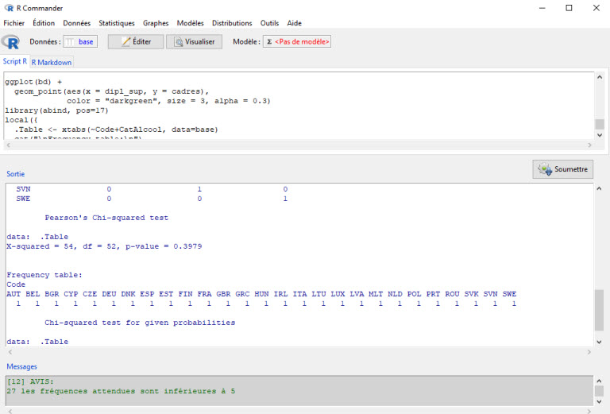
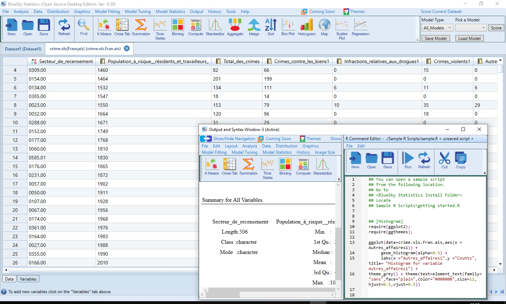

Ressources utiles
- Joseph Larmarange et als, 2020, Analyse-R Introduction à l’analyse d’enquêtes avec R et RStudio
- Julien Barnier, 2020, Introduction à R et au tidyverse
- Rebaudo, 2019, Se former au logiciel R : initiation et perfectionnement
- Jean-Herman Guay, Statistiques en sciences humaines avec R + Site pédagogique pour les usagers francophones de R
- Manny Gimond, 2020, Exploratory Data Analysis in R
- Jean R. Lobry, 2018, Graphiques de base
- Catalogue Sofia - Sujet: R Langage de programmation
- The R Manuals (Guides de base)
- CRAN Task Views (ressources spécialisées selon les “disciplines”)
- Quick-R (pratique pour les fonctions)
- R Bloggers (se tenir informé)
- RStudio Cheat Sheets
- RDocumentation
- R for Data Science
- Poser des questions: https://stackoverflow.com/ …
Interfaces graphiques
- John Fox, 2005, “The R Commander: A Basic-Statistics Graphical User Interface to R”, Journal of Statistical Software, Volume 14, Issue 9.

Pour installer Rcommander, préférable d’utiliser le R de base et non RStudio et exécuter la commande: install.packages(“Rcmdr”)
“I think that serious prospective users of R should be encouraged to use the command-line interface along with a script editor of some sort.” John Fox
- Application Bluesky : R + interface graphique similaire à SPSS.

LS0tDQp0aXRsZTogIkNhcHN1bGUgMTA6IFJlc3NvdXJjZXMiDQpvdXRwdXQ6IA0KICBodG1sX2RvY3VtZW50OiANCiAgICB0aGVtZTogY2VydWxlYW4NCiAgICBoaWdobGlnaHQ6IGhhZGRvY2sNCiAgICB0b2M6IHRydWUNCiAgICB0b2NfZmxvYXQ6IA0KICAgICAgY29sbGFwc2VkOiB0cnVlDQogICAgICBTbW9vdGhfc2Nyb2xsOiB0cnVlDQogICAgdG9jX2RlcHRoOiAzDQogICAgY29kZV9kb3dubG9hZDogdHJ1ZQ0KLS0tDQoNCjxicj4NCg0KIyMgUmVzc291cmNlcyB1dGlsZXMNCg0KPGJyPg0KDQotIEpvc2VwaCBMYXJtYXJhbmdlIGV0IGFscywgMjAyMCwgW0FuYWx5c2UtUiBJbnRyb2R1Y3Rpb24gw6AgbOKAmWFuYWx5c2UgZOKAmWVucXXDqnRlcyBhdmVjIFIgZXQgUlN0dWRpb10oaHR0cHM6Ly9sYXJtYXJhbmdlLmdpdGh1Yi5pby9hbmFseXNlLVIvICkNCi0gSnVsaWVuIEJhcm5pZXIsIDIwMjAsIFtJbnRyb2R1Y3Rpb24gw6AgUiBldCBhdSB0aWR5dmVyc2VdKGh0dHBzOi8vanViYS5naXRodWIuaW8vdGlkeXZlcnNlLykNCi0gUmViYXVkbywgMjAxOSwgDQpbU2UgZm9ybWVyIGF1IGxvZ2ljaWVsIFIgOiBpbml0aWF0aW9uIGV0IHBlcmZlY3Rpb25uZW1lbnRdKGh0dHBzOi8vbXlyYm9va2ZyLm5ldGxpZnkuY29tL215UkJvb2tfRlIucGRmKQ0KLSBKZWFuLUhlcm1hbiBHdWF5LCBbU3RhdGlzdGlxdWVzIGVuIHNjaWVuY2VzIGh1bWFpbmVzIGF2ZWMgUl0oaHR0cHM6Ly9hdHJpdW0udW1vbnRyZWFsLmNhL3ByaW1vLWV4cGxvcmUvZnVsbGRpc3BsYXk/ZG9jaWQ9VU0tQUxFUEgwMDIyNjQ3MzgmY29udGV4dD1MJnZpZD1VTSZzZWFyY2hfc2NvcGU9VG91dF9zYXVmX2FydGljbGVzJmlzRnJicj10cnVlJnRhYj1kZWZhdWx0X3RhYiZsYW5nPWZyX0ZSKQ0KICAgIFsrIFNpdGUgcMOpZGFnb2dpcXVlIHBvdXIgbGVzIHVzYWdlcnMgZnJhbmNvcGhvbmVzIGRlIFJdKGh0dHA6Ly9kaW1lbnNpb24udXNoZXJicm9va2UuY2EvZGltZW5zaW9uL3Yyc3NyY2FkcmUuaHRtbCkNCi0gW01hbm55IEdpbW9uZCwgMjAyMCwgRXhwbG9yYXRvcnkgRGF0YSBBbmFseXNpcyBpbiBSXShodHRwczovL21naW1vbmQuZ2l0aHViLmlvL0VTMjE4L2luZGV4Lmh0bWwpDQotIFtKZWFuIFIuIExvYnJ5LCAyMDE4LCBHcmFwaGlxdWVzIGRlIGJhc2VdKGh0dHA6Ly9wYmlsLnVuaXYtbHlvbjEuZnIvUi9wZGYvbGFuZzA0LnBkZikNCi0gW0NhdGFsb2d1ZSBTb2ZpYSAtICBTdWpldDogUiBMYW5nYWdlIGRlIHByb2dyYW1tYXRpb25dKGh0dHBzOi8vYXRyaXVtLnVtb250cmVhbC5jYS9wcmltby1leHBsb3JlL3NlYXJjaD92aWQ9VU0mbGFuZz1mcl9GUiZzb3J0Ynk9cmFuayZtb2RlPWFkdmFuY2VkKQ0KLSBbVGhlIFIgTWFudWFscyAoR3VpZGVzIGRlIGJhc2UpXShodHRwczovL2NyYW4uci1wcm9qZWN0Lm9yZy9tYW51YWxzLmh0bWwpDQotIFtDUkFOIFRhc2sgVmlld3MgKHJlc3NvdXJjZXMgc3DDqWNpYWxpc8OpZXMgc2Vsb24gbGVzICJkaXNjaXBsaW5lcyIpXShodHRwczovL2NyYW4uci1wcm9qZWN0Lm9yZy93ZWIvdmlld3MvKQ0KLSBbUXVpY2stUiAocHJhdGlxdWUgcG91ciBsZXMgZm9uY3Rpb25zKV0oaHR0cHM6Ly93d3cuc3RhdG1ldGhvZHMubmV0LykNCi0gW1IgQmxvZ2dlcnMgKHNlIHRlbmlyIGluZm9ybcOpKV0oaHR0cHM6Ly93d3cuci1ibG9nZ2Vycy5jb20vKQ0KLSBbUlN0dWRpbyBDaGVhdCBTaGVldHNdKGh0dHBzOi8vcnN0dWRpby5jb20vcmVzb3VyY2VzL2NoZWF0c2hlZXRzLykNCi0gW1JEb2N1bWVudGF0aW9uXShodHRwOi8vd3d3LnJkb2N1bWVudGF0aW9uLm9yZy8pDQotIFtSIGZvciBEYXRhIFNjaWVuY2VdKGh0dHBzOi8vcjRkcy5oYWQuY28ubnovKQ0KLSBQb3NlciBkZXMgcXVlc3Rpb25zOiBodHRwczovL3N0YWNrb3ZlcmZsb3cuY29tLyAuLi4NCg0KPGJyPg0KDQojIyMgSW50ZXJmYWNlcyBncmFwaGlxdWVzDQoNCjxicj4NCi0gIEpvaG4gRm94LCAyMDA1LCBbIlRoZSBSIENvbW1hbmRlcjogQSBCYXNpYy1TdGF0aXN0aWNzIEdyYXBoaWNhbCBVc2VyIEludGVyZmFjZSB0byBSIl0oaHR0cHM6Ly93d3cuanN0YXRzb2Z0Lm9yZy9hcnRpY2xlL3ZpZXcvdjAxNGkwOSksIEpvdXJuYWwgb2YgU3RhdGlzdGljYWwgU29mdHdhcmUsIFZvbHVtZSAxNCwgSXNzdWUgOS4gDQoNCmBgYHtyLCBlY2hvID0gRkFMU0UsICBvdXQud2lkdGggPSAiNjAlIn0NCmtuaXRyOjppbmNsdWRlX2dyYXBoaWNzKCJtYXJrZG93bi9yY29tbWFuZGVyLmpwZyIpIA0KYGBgDQoNCipQb3VyIGluc3RhbGxlciBbYFJjb21tYW5kZXJgXShodHRwczovL2NyYW4uci1wcm9qZWN0Lm9yZy93ZWIvcGFja2FnZXMvUmNtZHIvaW5kZXguaHRtbCksIHByw6lmw6lyYWJsZSBk4oCZdXRpbGlzZXIgbGUgKipSKiogZGUgYmFzZSBldCBub24gKipSU3R1ZGlvKiogZXQgZXjDqWN1dGVyIGxhIGNvbW1hbmRlOiBpbnN0YWxsLnBhY2thZ2VzKCJSY21kciIpICAqDQoNCjxicj4NCg0KPiAiSSB0aGluayB0aGF0IHNlcmlvdXMgcHJvc3BlY3RpdmUgdXNlcnMgb2YgUiBzaG91bGQgYmUgZW5jb3VyYWdlZCB0byB1c2UgdGhlIGNvbW1hbmQtbGluZSBpbnRlcmZhY2UgYWxvbmcgd2l0aCBhIHNjcmlwdCBlZGl0b3Igb2Ygc29tZSBzb3J0LiINCj4gSm9obiBGb3gNCg0KPGJyPg0KDQotIEFwcGxpY2F0aW9uIFtCbHVlc2t5XShodHRwczovL3d3dy5qc3RhdHNvZnQub3JnL2FydGljbGUvdmlldy92MDE0aTA5KSA6IFIgKyBpbnRlcmZhY2UgZ3JhcGhpcXVlIHNpbWlsYWlyZSDDoCBTUFNTLg0KDQpgYGB7ciwgZWNobyA9IEZBTFNFLCAgb3V0LndpZHRoID0gIjYwJSJ9DQprbml0cjo6aW5jbHVkZV9ncmFwaGljcygibWFya2Rvd24vYmx1ZXNreS5qcGciKSANCmBgYA0K